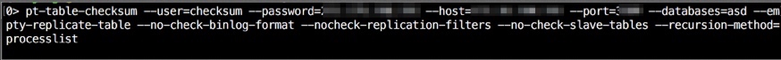
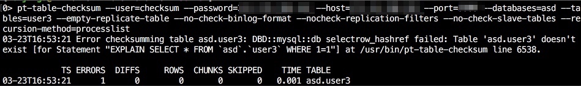
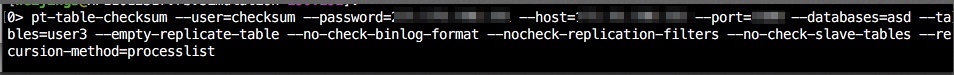

记一次mysql主从一致校验走过的坑
前言：
最近一台db master宕机，立刻迁到了一台从库上。这次的宕机在恢复后我做了主从一致校验，发现有部分数据不一致，细细想想还是挺可怕的，万一数据不一致的很多，主库挂了，切从库，那后果简直不敢想象。。。
因此主从一致校验是必要的，但是这个东西比较费时，因此一般来说没有出故障一周校验一次即可。本来准备自己写个校验脚本后来发现要考虑的问题太多，于是发现pt-table-checksum这个神器，踩坑之旅开始。
先说一下生产环境，目前所有的端口都是一主多从的架构，因为对读的要求高，主从分离，多从库有利于读。
1、可能情况：
若发现主从数据不一致可能有以下原因导致：
①原来的主库down机，将从库升为主库期间导致数据丢失，从而发生数据不一致
②误在从库上操作了
③负载过大导致复制线程资源不足
对于主从不一致无非以下三种：
主库数据多余从库(这里的数据包括数据库、表、字段，不仅仅是一条记录)
主库数据少于从库(这里的数据包括数据库、表、字段，不仅仅是一条记录)
主库数据量和从库一样，但是数据有差异(记录条数相同，但是记录内容有偏差)
2、工具选用：
一开始是想自己写个主从检查脚本的，大致用select count(1) from db.table，后来发现写出来的不严谨，只能检查数据量是否一致万一数据不一致就无法检测出来，而且太耗费系统资源不可取。后来发现有现成的工具pt-table-checksum。它的大体执行流程是:
登录主库->根据唯一索引将表分块(没有唯一索引会报错)->对块校验->将校验结果默认写入percona.checksums表->比较percona.checksums中master db和slave db不一致的值，输出。
pt-table-checksum默认主从的数据库和表结构一致，若从库的表结构与主库不一致，会导致主从复制中断。同时pt-table-checksum要求复制是基于STATEMENT格式的，它在运行时会在主库上设置binlog_format=STATEMENT(需要super权限)，但是由于MySQL的限制，这一设置并不会传递到从库，因此当从库的binlog格式是ROW格式时，无法直接对从库进行校验。
3、大致思路：
上面说了pt-table-checksum默认主从的数据库和表结构一致，对于主从某些库、表、字段不一致(这里的不一致主要指的是多了或者少了)，它无法检测出来。
下面是四种情况的输出:
从库少asd库：

从库多asd库：

从库少user3表：

从库多user3表：

可以看出在主库不存在某个库某个表的情况下，使用pt-table-checksum检测从库是不会有任何报错信息的，但其实从库是多了库/表的。
因此在使用pt-table-checksum检测前需要先检测主从的库、表以及字段是否一致(是否多库多表少库少表多字段少字段)。有多/少的记录到一个文件report中，然后以主库为的数据库、表为依据，依次遍历，使用pt-table-checksum检查从库上相应的数据库和表，将结果追加到report中。最后对report做处理，发送给自己邮箱。
4、操作脚本
#!/bin/bash
#set -x
PASSWORD= #登录用户的密码
SOCK= #端口
#SLAVE=()
SLAVE=() #从库ip(有几个写几个，注意是一个数组，用空格隔开)
MASTER= #主库ip
#连接语句
MYSQL_CONN="mysql -uchecksum -p$PASSWORD"
#存放产生临时文件的文件夹
mysql_checksum=/tmp/mysql_checksum
#获取主库和从库的数据库、表
get_db_table_field_name() {
if [ -d $mysql_checksum/$SOCK ];then
rm -r $mysql_checksum/$SOCK
fi
mkdir -p $mysql_checksum/$SOCK
echo "#########start get port $SOCK master db #########"
#获取主库除了mysql、test、information_schema、performance_schema、percona的数据库名
$MYSQL_CONN -P $SOCK -h $MASTER -e "show databases;"|grep -v mysql|grep -v test |grep -v information_schema|grep -v Database|grep -v performance_schema |grep -v percona > $mysql_checksum/$SOCK/${SOCK}_${MASTER}_db
#获取上一步中的数据库中的表名
for DB in `cat $mysql_checksum/$SOCK/${SOCK}_${MASTER}_db`;do
$MYSQL_CONN -P $SOCK -h $MASTER -e "USE $DB;show tables;"|grep -v Tables > $mysql_checksum/$SOCK/${SOCK}_${MASTER}_${DB}_table
done
#获取上一步中得到的表中的字段名
for DB in `cat $mysql_checksum/$SOCK/${SOCK}_${MASTER}_db`;do
for TABLE in `cat $mysql_checksum/$SOCK/${SOCK}_${MASTER}_${DB}_table`;do
$MYSQL_CONN -P ${SOCK} -h $MASTER -e "USE $DB;desc $TABLE;"|grep -v Field > $mysql_checksum/$SOCK/${SOCK}_${MASTER}_${DB}_${TABLE}_field
done
done
#获取从库除了mysql、test、information_schema、performance_schema、percona的数据库名
echo "#########start get port $SOCK slave db #########"
for ((j=0;j<${#SLAVE[@]};j++));do
$MYSQL_CONN -P $SOCK -h ${SLAVE[$j]} -e "show databases;"|grep -v mysql|grep -v test |grep -v information_schema|grep -v Database|grep -v performance_schema |grep -v percona > $mysql_checksum/$SOCK/${SOCK}_${SLAVE[$j]}_db
#获取上一步中的数据库中的表名 for DB in `cat $mysql_checksum/$SOCK/${SOCK}_${SLAVE[$j]}_db`;do
$MYSQL_CONN -P $SOCK -h ${SLAVE[$j]} -e "USE $DB;show tables;"|grep -v Tables > $mysql_checksum/$SOCK/${SOCK}_${SLAVE[$j]}_${DB}_table
done
#获取上一步中得到的表中的字段名
for DB in `cat $mysql_checksum/$SOCK/${SOCK}_${SLAVE[$j]}_db`;do
for TABLE in `cat $mysql_checksum/$SOCK/${SOCK}_${SLAVE[$j]}_${DB}_table`;do
$MYSQL_CONN -P $SOCK -h ${SLAVE[$j]} -e "USE $DB;desc $TABLE;"|grep -v Field > $mysql_checksum/$SOCK/${SOCK}_${SLAVE[$j]}_${DB}_${TABLE}_field
done
done
done
}
#检查从库是否多库少库多表少表多字段少字段
checksum_db_table() {
if [ -e $mysql_checksum/$SOCK/report ];then
rm $mysql_checksum/$SOCK/report
fi
#将主库的数据库名排序
cat $mysql_checksum/$SOCK/${SOCK}_${MASTER}_db | sort |uniq|sort > $mysql_checksum/$SOCK/${SOCK}_${MASTER}_db_sort
for ((j=0;j<${#SLAVE[@]};j++));do
#将从库的数据库名排序
cat $mysql_checksum/$SOCK/${SOCK}_${SLAVE[$j]}_db | sort |uniq|sort > $mysql_checksum/$SOCK/${SOCK}_${SLAVE[$j]}_db_sort
#comm命令检测从库是多还是少库，注意comm后面跟的两个文件顺序不能错
slave_surplus_db=`comm -13 $mysql_checksum/$SOCK/${SOCK}_${MASTER}_db_sort $mysql_checksum/$SOCK/${SOCK}_${SLAVE[$j]}_db_sort|tr '\n' ' ' `
slave_lack_db=`comm -23 $mysql_checksum/$SOCK/${SOCK}_${MASTER}_db_sort $mysql_checksum/$SOCK/${SOCK}_${SLAVE[$j]}_db_sort|tr '\n' ' ' `
if [ ! -z "$slave_surplus_db" ];then
echo "port $SOCK slave ${SLAVE[$j]} surplus database $slave_surplus_db" | tee -a $mysql_checksum/$SOCK/report
fi
if [ ! -z "$slave_lack_db" ];then
echo "port $SOCK slave ${SLAVE[$j]} lack database $slave_lack_db" >> $mysql_checksum/$SOCK/report
fi
#库检查完了，就以主库包含的库为基准，comm命令检测从库是多还是少表，同样comm后面跟的两个文件顺序不能错
for DB in `cat $mysql_checksum/$SOCK/${SOCK}_${MASTER}_db_sort`;do
cat $mysql_checksum/$SOCK/${SOCK}_${MASTER}_${DB}_table| sort |uniq|sort > $mysql_checksum/$SOCK/${SOCK}_${MASTER}_${DB}_table_sort
cat $mysql_checksum/$SOCK/${SOCK}_${SLAVE[$j]}_${DB}_table |sort |uniq|sort > $mysql_checksum/$SOCK/${SOCK}_${SLAVE[$j]}_${DB}_table_sort
slave_surplus_table=`comm -13 $mysql_checksum/$SOCK/${SOCK}_${MASTER}_${DB}_table_sort $mysql_checksum/$SOCK/${SOCK}_${SLAVE[$j]}_${DB}_table_sort|tr '\n' ' ' `
slave_lack_table=`comm -23 $mysql_checksum/$SOCK/${SOCK}_${MASTER}_${DB}_table_sort $mysql_checksum/$SOCK/${SOCK}_${SLAVE[$j]}_${DB}_table_sort|tr '\n' ' ' `
if [ ! -z "$slave_surplus_table" ];then
echo "port $SOCK slave ${SLAVE[$j]} database ${DB} surplus table $slave_surplus_table" |tee -a $mysql_checksum/$SOCK/report
fi
if [ ! -z "$slave_lack_table" ];then
echo "port $SOCK slave ${SLAVE[$j]} database ${DB} lack table ${DB}.$slave_lack_table" |tee -a $mysql_checksum/$SOCK/report
fi
#表检查完了，就以主库包含的表为基准，diff命令检测从库是多还是少字段，diff后面的文件顺序无所谓
for TABLE in `cat $mysql_checksum/$SOCK/${SOCK}_${MASTER}_${DB}_table_sort`;do
diff $mysql_checksum/$SOCK/${SOCK}_${MASTER}_${DB}_${TABLE}_field $mysql_checksum/$SOCK/${SOCK}_${SLAVE[$j]}_${DB}_${TABLE}_field
if [ $? -ne 0 ];then
echo "port $SOCK slave ${SLAVE[$j]} have different field in ${DB}.${TABLE}" |tee -a $mysql_checksum/$SOCK/report
fi
done
done
done
}
#以主库有的库和表为基准，检测从库的记录是否与主库一致
check_table_field() {
for DB in `cat $mysql_checksum/$SOCK/${SOCK}_${MASTER}_db_sort`;do
for TABLE in `cat $mysql_checksum/$SOCK/${SOCK}_${MASTER}_${DB}_table_sort`;do
echo "#########port ${SOCK} database ${DB} table ${TABLE}"
PTDEBUG=1 pt-table-checksum --user=checksum --password=$PASSWORD --host=$MASTER --port=${SOCK} --databases=$DB --tables=$TABLE --empty-replicate-table --replicate=percona.${SOCK}_checksums --no-check-binlog-format --nocheck-replication-filters --no-check-slave-tables --recursion-method dsn=D=percona,t=${SOCK}_dsns >> $mysql_checksum/$SOCK/report 2>&1
done
done
}
#将生成的report进行处理
process_report() {
sed -i -ne '/^port/p' -ne '/checksum diffs/p' -ne '/^[0-1][1-9]-[0-3][1-9]/p' $mysql_checksum/$SOCK/report
grep "^port" $mysql_checksum/$SOCK/report > $mysql_checksum/$SOCK/mail
awk '$3!=0' $mysql_checksum/$SOCK/report |egrep -B ${#SLAVE[@]} '^[0-1][1-9]-[0-3][1-9]' >> $mysql_checksum/$SOCK/mail
if [ ! -s $mysql_checksum/$SOCK/mail ];then
echo "$SOCK no problem"|mail -s "port $SOCK checksum report" weijing3@book.sina.com
else
cat $mysql_checksum/$SOCK/mail|mail -s "port $SOCK mysql checksum report" weijing3@book.sina.com
fi
}
get_db_table_field_name
checksum_db_table
check_table_field
process_report
5、脚本解读
每个函数基本都注释的很清楚了，process_report函数需要讲一下，脚本中把所有的信息都重定向到了report中，report的大致样子是这样的
port xxx slave xxx lack database asd port xxx slave xxx lack database asd port xxx slave xxx database percona surplus table person triggers # /usr/bin/perl 5.010001 # Linux HP11012317.rb.simulation 2.6.32-431.11.2.el6.toa.2.x86_64 #1 SMP Wed Apr 9 15:55:33 CST 2014 x86_64 x86_64 x86_64 GNU/Linux ...此处省略n多PTDEBUG的调试信息 OALESCE(this_cnt-master_cnt, 0) AS cnt_diff, COALESCE(this_crc <> master_crc OR ISNULL(master_crc) <> ISNULL(this_crc), 0) AS crc_diff, this_cnt, master_cnt, this_crc, master_crc FROM `percona`.`10185_752_checksums` WHERE (master_cnt <>this_cnt OR master_crc <> this_crc OR ISNULL(master_crc) <> ISNULL(this_crc)) AND (db='books' AND tbl='bag_collection_1') # pt_table_checksum:10150 24160 1 checksum diffs on D11059841.rb.weibo.cn # RowChecksum:6008 24160 SELECT CONCAT(db, '.', tbl) AS `table`, chunk, chunk_index, lower_boundary, upper_boundary, COALESCE(this_cnt-master_cnt, 0) AS cnt_diff, COALESCE(this_crc <> master_crc OR ISNULL(master_crc) <> ISNULL(this_crc), 0) AS crc_diff, this_cnt, master_cnt, this_crc, master_crc FROM `percona`.`10185_752_checksums` WHERE (master_cnt <> this_cnt OR master_crc <> this_crc OR ISNULL(master_crc) <> ISNULL(this_crc)) AND (db='books' AND tbl='bag_collection_1') # pt_table_checksum:10150 24160 0 checksum diffs on D11060340.rb.db # RowChecksum:6008 24160 SELECT CONCAT(db, '.', tbl) AS `table`, chunk, chunk_index, lower_boundary, upper_boundary, COALESCE(this_cnt-master_cnt, 0) AS cnt_diff, COALESCE(this_crc <> master_crc OR ISNULL(master_crc) <> ISNULL(this_crc), 0) AS crc_diff, this_cnt, master_cnt, this_crc, master_crc FROM `percona`.`10185_752_checksums` WHERE (master_cnt <> this_cnt OR master_crc <> this_crc OR ISNULL(master_crc) <> ISNULL(this_crc)) AND (db='books' AND tbl='bag_collection_1') # pt_table_checksum:10150 24160 0 checksum diffs on D11059852.rb.weibo.cn ...此处省略n多PTDEBUG的调试信息 TS ERRORS DIFFS ROWS CHUNKS SKIPPED TIME TABLE 03-23T14:23:14 0 1 83350 5 0 3.983 books.bag_collection_1
首部分是从库多库少库多表少表多字段少字段的情况，然后就是pt-table-checksum的调试信息了，包含了输出信息。sed过滤所有的无用信息，保留从库多库少库多表少表多字段少字段的情况，和从库信息，以及pt-table-checksum的标准输出，如下：
port xxx slave xxx lack database asd port xxx slave xxx lack database asd port xxx slave xxx database percona surplus table person triggers # pt_table_checksum:10150 15046 0 checksum diffs on D10117279.rb.db # pt_table_checksum:10150 15046 0 checksum diffs on D11059851.rb.weibo.cn # pt_table_checksum:10150 15046 0 checksum diffs on D11060339.rb.db 03-21T09:24:54 0 0 1042909 17 0 23.607 asd.test1 # pt_table_checksum:10150 16227 0 checksum diffs on D10117279.rb.db # pt_table_checksum:10150 16227 0 checksum diffs on D11059851.rb.weibo.cn # pt_table_checksum:10150 16227 0 checksum diffs on D11060339.rb.db 03-21T09:25:23 0 1 1278316 19 0 28.421 asd.test2
此时的信息已经可读了，使用awk截取第三个字段列非0的行，并截取该行上面n行(n是slave的数量)，得到的结果就是所有有问题的库,表,字段和记录了.
6、操作步骤：
随便找一台机器，本地机器也行，将脚本部署上去，然后登陆主库执行以下命令
mysql> GRANT select,insert,update,delete,create,process,super,replication slave,lock tables ON *.* to 'checksum'@'脚本所在机器的ip' IDENTIFIED by 'xxx'; mysql> CREATE DATABASE `percona` ; mysql> use percona; mysql> CREATE TABLE `port_checksums` ( #这里的port要改成你的数据库的端口 `db` char(64) NOT NULL, `tbl` char(64) NOT NULL, `chunk` int(11) NOT NULL, `chunk_time` float DEFAULT NULL, `chunk_index` varchar(200) DEFAULT NULL, `lower_boundary` text, `upper_boundary` text, `this_crc` char(40) NOT NULL, `this_cnt` int(11) NOT NULL, `master_crc` char(40) DEFAULT NULL, `master_cnt` int(11) DEFAULT NULL, `ts` timestamp NOT NULL DEFAULT CURRENT_TIMESTAMP ON UPDATE CURRENT_TIMESTAMP, PRIMARY KEY (`db`,`tbl`,`chunk`), KEY `ts_db_tbl` (`ts`,`db`,`tbl`) ) ENGINE=InnoDB DEFAULT CHARSET=utf8; mysql> CREATE TABLE `port_dsns` ( #这里的port要改成你的数据库的端口 `id` int(11) NOT NULL AUTO_INCREMENT, `parent_id` int(11) DEFAULT NULL, `dsn` varchar(255) NOT NULL, PRIMARY KEY (`id`) ) ENGINE=InnoDB AUTO_INCREMENT=8 DEFAULT CHARSET=utf8;
select,process,super是pt-table-checksum需要的权限,insert,update,delete,create,super,replication slave,lock tables是pt-table-sync需要的权限.
主库把这些操作完毕后就可以执行脚本了，有问题会发送邮件给自己，没问题会发送no problem给自己。
在这里创建dsns是因为该方法比较灵活，下一部分会讲到。
7、特殊情况
线上有个数据库是两小时备份一次的,一开始--recursion-method使用的processlist，表示主库自己找从库，当两小时备份库不运行的时候pt-table-checksum会等待这个两小时备份库,直到它开始备份为止,等如此长的时间显然是不行的.因此可以换--recursion-method=hosts或dsn方法
对于hosts方法,在从库的配置文件中添加report_host和report_port，但不在两小时备份库的配置文件添加report_host和report_port，这样pt-table-checksum登录主库检查时show hosts slave就找不到两小时备份库，也就忽略对两小时备份库的检查了。该方法需要修改配置文件并重启从库，不推荐。
对于dsn方法，在主库创建percona.port_dsns表,表中插入从库的信息,执行pt-table-checksum的时候指定dsn方法,就会去percona.port_dsns表找从库信息.可以看出这种方法灵活且不影响线上服务,是比较好的,脚本中也是使用的这个方法.
以3306为例
在192.168.1.1(主库)上创建dsns表，并插入以下语句（从库的信息插入进去）
CREATE DATABASE `percona` ; CREATE TABLE `3306_dsns` ( `id` int(11) NOT NULL AUTO_INCREMENT, `parent_id` int(11) DEFAULT NULL, `dsn` varchar(255) NOT NULL, PRIMARY KEY (`id`) ) ENGINE=InnoDB AUTO_INCREMENT=8 DEFAULT CHARSET=utf8; insert into percona.3306_dsns(dsn) values('h=192.168.1.2,P=3306,u=checksum,p=123'); insert into percona.3306_dsns(dsn) values('h=192.168.1.3,P=3306,u=checksum,p=123'); insert into percona.3306_dsns(dsn) values('h=192.168.1.4,P=3306,u=checksum,p=123');
在主库或10191上执行pt-table-checksum --user=checksum --password=123 --host=192.168.1.1 --port=3306 --databases=asd --tables=user1 --empty-replicate-table --replicate=percona.checksums --no-check-binlog-format --nocheck-replication-filters --no-check-slave-tables --recursion-method dsn=D=percona,t=3306_dsns即可
8、使用pt-table-checksum可能的报错：
1、mysql table is marked as crashed
表损坏，使用以下命令修复
mysql> myisamchk -r $TABLE_NAME mysql> myisamchk -r -v -f $TABLE_NAME
2、no slaves were found
主库找不到从库，一般用dsn方法不会有这个情况，除非在主库的percona.portdsn插入从库信息有误
3、03-23T15:16:40 Skipping chunk 1 of asd.user1 because it is oversized. The current chunk size limit is 2000 rows (chunk size=1000 * chunk size limit=2.0), but MySQL estimates that there are 2008 rows in the chunk.
这种情况是分的块太大了，设置--chunk-size-limit
4、03-21T12:16:08 Error checksumming table asd.user1: Possible infinite loop detected! The lower boundary for chunk 1 is <1> and the lower boundary for chunk 2 is also <1>. This usually happens when using a non-unique single column index. The current chunk index for table asd.user1 is idx_bid which is not unique and covers 1 column.
没有唯一索引